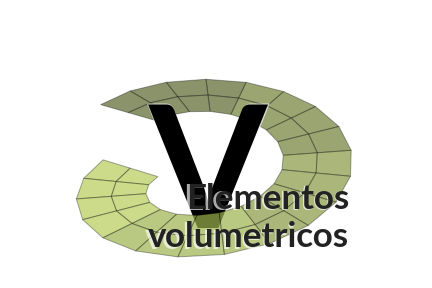
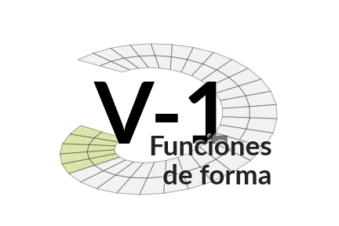
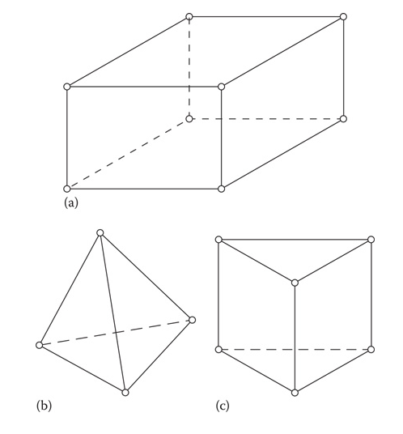
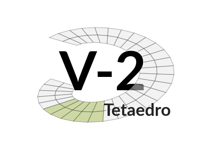
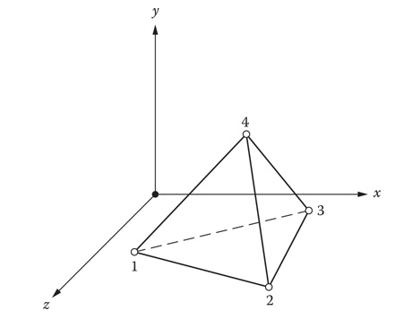
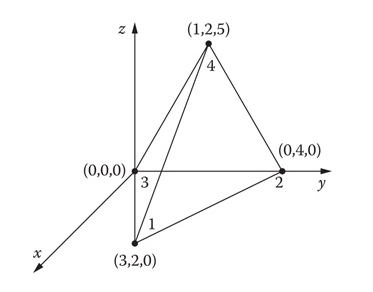
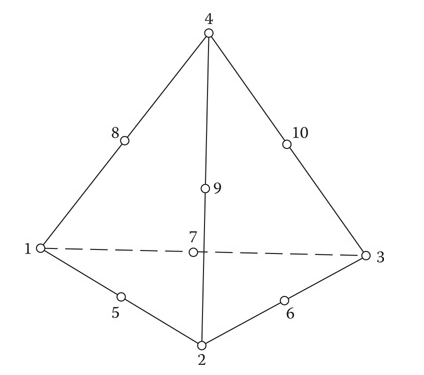
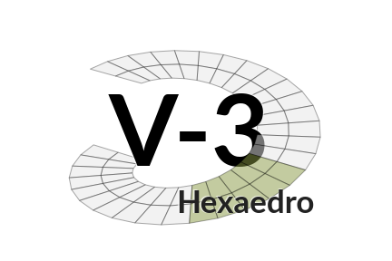
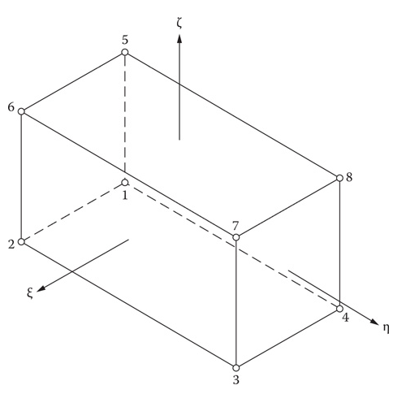
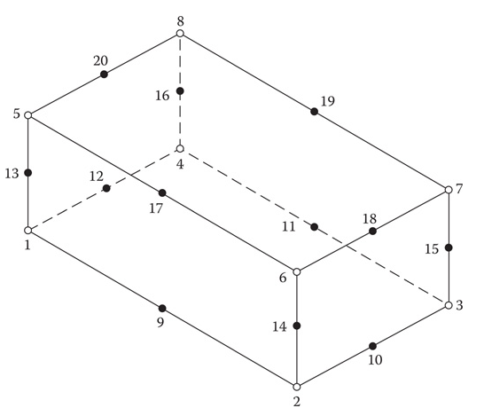

Elemento tetraedro:

Las funciones de forma están dadas por:
$$\phi = \alpha_1 + \alpha_2 x + \alpha_3 y + \alpha_4 z$$Para obtener sus ecuaciones tenemos que resolver el sistema:
$$\phi_1 = \alpha_1 + \alpha_2 x_1 + \alpha_3 y_1 + \alpha_4 z_1$$$$\phi_2 = \alpha_1 + \alpha_2 x_2 + \alpha_3 y_2 + \alpha_4 z_2$$$$\phi_3 = \alpha_1 + \alpha_2 x_3 + \alpha_3 y_3 + \alpha_4 z_3$$$$\phi_4 = \alpha_1+ \alpha_2 x_4 + \alpha_3 y_4 + \alpha_4 z_4$$El vector de $\mathbf{\alpha}$ se obtiene:
$$\mathbf{\alpha} = \mathbf{C}^{-1}\mathbf{\phi}$$Las funciones de forma pueden ser calculadas usando:
$$\begin{bmatrix} N_1 & N_2 & N_3 & N_4 \end{bmatrix} = \begin{bmatrix} 1 & x & y & z \end{bmatrix} \mathbf{C}^{-1}$$Ejemplo:
(a) Calcula las funciones de forma para el tetraedro:

(b) Verifica que las funciones $N_i$ valgan $1$ para el punto $(x_i, y_i, z_i)$ y cero para los demás.
Solución:
La matriz $\mathbf{C}$ sería:
$$ \mathbf{C} = \begin{bmatrix} 1 & x_1 & y_1 & z_1 \\ 1 & x_2 & y_2 & z_2 \\ 1 & x_3 & y_3 & z_3 \\ 1 & x_4 & y_4 & z_4 \end{bmatrix} = \begin{bmatrix} 1 & 3 & 2 & 0 \\ 1 & 0 & 4 & 0 \\ 1 & 0 & 0 & 0 \\ 1 & 1 & 2 & 5 \end{bmatrix}$$Esto es:
$$N_1 = \frac{x}{3} - \frac{z}{15} $$$$N_2 = - \frac{x}{6} + \frac{y}{4} - \frac{z}{15} $$$$N_3 = 1 - \frac{x}{6} - \frac{y}{4} - \frac{z}{15} $$$$N_4 = \frac{z}{5}$$
Las funciones de forma tienen la estructura:
$$\phi = \alpha_1 + \alpha_2 x + \alpha_3 y + \alpha_4 z + \alpha_5 x^2 + \alpha_6 xy + \alpha_7 y^2 + \alpha_8 yz + \alpha_9 z^2 + \alpha_{10} xz$$De manera análoga a los elementos triangulares, donde usamos coordenadas de área, resulta más práctico trabajar con coordenadas de volumen $L_1$, $L_2$, $L_3$, $L_4$. Estas coordenadas corresponden a las funciones de forma lineales $N_1$, $N_2$, $N_3$, $N_4$ y cumplen:
$$L_1 + L_2 + L_3 + L_4 = 1$$Esto nos permite calcular las integrales de las funciones lineales usando:
$$\int\limits_V L_1^a L_2^b L_3^c L_4^d dV = \dfrac {a!b!c!d!} {(3+a+b+c+d)!} 6V$$Así las funciones cuadráticas se pueden definir de una manera sencilla, por ejemplo, para $N_1$ tenemos:
$$N_1 = (2L_1 -1) L_1$$(Las funciones de forma de todos los vértices son similares)
La función $N_5$ queda como:
$$N_5 = 4 L_1 L_2 $$(Las funciones de forma de los nodos que se encuentran en las aristas son similares) Nótese la similitud con las funciones de forma para elementos triangulares.

Las funciones de forma tienen la estructura:
$$\phi = \alpha_1 + \alpha_2 x + \alpha_3 y + \alpha_4 z + \alpha_5 xy + \alpha_6 xz + \alpha_7 yz + \alpha_8 xyz$$El procedimiento para obtener las funciones de forma es igual que para el tetraedro: primero obtenemos la matriz $\mathbf{C}$ que resulta del sistema:
$$\begin{bmatrix} \phi_1 \\ \cdot \\ \cdot \\ \phi_8 \end{bmatrix} = \begin{bmatrix} 1 & x_1 & y_1 & z_1 & x_1y_1 & x_1z_1 & y_1z_1 & x_1y_1z_1 \\ \cdot & \cdot & \cdot & \cdot & \cdot & \cdot & \cdot & \cdot & \\ \cdot & \cdot & \cdot & \cdot & \cdot & \cdot & \cdot & \cdot & \\ 1 & x_8 & y_8 & z_8 & x_8y_8 & x_8z_8 & y_8z_8 & x_8y_8z_8 \end{bmatrix} \begin{bmatrix} \alpha_1 \\ \cdot \\ \cdot \\ \alpha_8 \end{bmatrix} $$Siendo posible obtener las funciones de forma usando:
$$\begin{bmatrix} N_1 & N_2 & N_3 & N_4 & N_5 & N_6 & N_7 & N_8 \end{bmatrix} = \begin{bmatrix} 1 & x & y & z & xy & xz & yz & xyz\end{bmatrix} \mathbf{C}^{-1}$$Al igual que el elemento cuadrilátero es posible utilizar coordenadas naturales para este elemento. 
Las funciones de forma se obtienen:
$$\begin{bmatrix} N_1 \\ N_2 \\ N_3 \\ N_4 \\ N_5 \\ N_6 \\ N_7 \\ N_8 \end{bmatrix} = \frac {1} {8} \begin{bmatrix} (1-\xi) (1-\eta) (1-\zeta) \\ (1+\xi) (1-\eta) (1-\zeta) \\ (1+\xi) (1+\eta) (1-\zeta) \\ (1-\xi) (1+\eta) (1-\zeta) \\ (1-\xi) (1-\eta) (1+\zeta) \\ (1+\xi) (1-\eta) (1+\zeta) \\ (1+\xi) (1+\eta) (1+\zeta) \\ (1-\xi) (1+\eta) (1+\zeta) \\ \end{bmatrix}$$Las funciones de forma se pueden escribir de manera más concisa usando la expresión:
$$N_i = \frac {1}{8} (1+\xi\xi_i) (1+\eta\eta_i)(1+\zeta\zeta_i) \textrm{ para } i = 1,2,...,8$$Donde $\xi_i$, $\eta_i$ y $\zeta_i$ son $= \pm 1$ según el nodo.
Se puede extender el elemento hexaedro lineal a cuadrático aumentando nodos en la mitad de las aristas:

Las funciones de forma pueden ser obtenidas usando:
$$N_i = \frac {1}{8} (1+\xi\xi_i) (1+\eta\eta_i)(1+\zeta\zeta_i)(\xi\xi_i+\eta\eta_i+\zeta\zeta_i-2) $$$$\textrm{Para los nodos } i = 1,2,...,8$$$$N_i = \frac {1}{4} (1-\xi^2) (1+\eta\eta_i)(1+\zeta\zeta_i) $$$$\textrm{Para los nodos } i = 10,12,18,20$$$$N_i = \frac {1}{4} (1-\eta^2) (1+\xi\xi_i)(1+\zeta\zeta_i) $$$$\textrm{Para los nodos } i = 9,11,17,19$$$$N_i = \frac {1}{4} (1-\zeta^2) (1+\xi\xi_i) (1+\eta\eta_i) $$$$\textrm{Para los nodos } i = 13,14,15,16$$Ejercicio: Obtén la función de forma que corresponde a tu número de lista y comprueba que vale $1$ para las coordenadas del nodo y $0$ para dos nodos más.